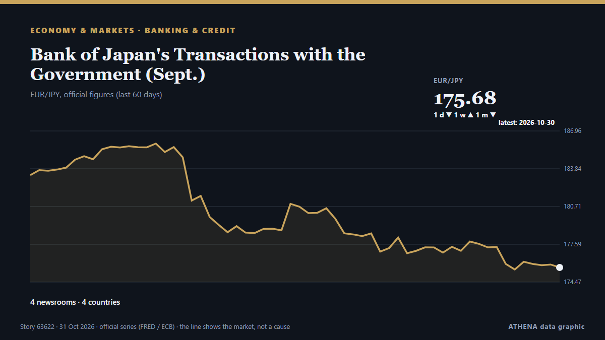

Banking & credit
| 18 Oct | 0 |
|---|---|
| 19 Oct | 0 |
| 20 Oct | 0 |
| 21 Oct | 0 |
| 22 Oct | 0 |
| 23 Oct | 2 |
| 24 Oct | 0 |
| 25 Oct | 2 |
| 26 Oct | 5 |
| 27 Oct | 5 |
| 28 Oct | 6 |
| 29 Oct | 0 |
| 30 Oct | 3 |
| 31 Oct | 0 |

Bank of Japan's Transactions with the Government (Sept.)
Although core consumer inflation occasionally exceeded the target in the early 2020s, Friday marked the first time the Bank of Japan confirmed that its long-term inflation goal had been achieved. from Free Malaysia Today
US senator calls for accountability over Israel’s killing of 9 Americans in occupied West Bank
‘Nine American citizens dead. No accountability,’ says Chris Van Hollen. from Anadolu Agency (English)
Venezuelan leader demands Bank of England return gold
CARACAS, Venezuela (AFP) — Venezuelan interim president Delcy Rodriguez demanded Wednesday the return of her country's gold reserves held at the Bank of England, where they were frozen more than six… from Jamaica Observer
Revolut takes on high street banks with launch of personal loans in UK
The unsecured loans, ranging between £2,000 and £25,000, offer ‘near-instant’ funds after approval. from Evening Standard (London)
Israeli settlers threaten West Bank families, attack journalists
Palestinian families face threats of expulsion as armed settlers establish a new outpost, while activists and journalists report violent assaults. from The New Arab
UN probe accuses Israel of 'extermination' in West Bank
GENEVA, Switzerland — Israel has committed the crime against humanity of "extermination" in the West Bank, while continuing to commit "genocide" against Palestinians in the Gaza Strip, United… from The Korea Times
First Abu Dhabi Bank's nine-month profit rises 3% to Dh16.46 billion
Dubai: First Abu Dhabi Bank (FAB) reported a 3 per cent increase in group net profit to Dh16.46 billion for the first nine months of 2026, supported by higher lending volumes, improved interest… from Gulf News
Officials call for reliable, affordable energy to drive industrial growth in Africa
COTONOU: TANZANIA has insisted on making reliable electricity and energy the foundation of its economic transformation that will stimulate industrial growth, investment, employment and national… from Daily News
Bulgaria Joins International Initiative to Develop Air Defence Capabilities
Oct 26 - Britain will not join the Canada-led Defence, Security and Resilience Bank, in a setback to efforts to create the world's first global defence bank, according to a person familiar with the… from The Straits Times
Nigeria’s president seeks parliament approval for about $21.7bn borrowing
Nigerian President Bola Tinubu has asked the National Assembly to approve a supplementary external borrowing plan worth $20.52 billion and €1.05 billion ($1.17 billion) for 2026-2027 to fund… from MyJoyOnline
ILO Program Helps Improve Productivity, Working Conditions in Cashmere Industry The International Labour Organization (ILO) has focused on creating youth-friendly... 34 minutes
The Ministry of Manpower and the International Labour Organization (ILO) signed a Joint Declaration on Indonesia's ... from Antara (English)
World Bank sees commodity prices up 23% in 2026 due to Middle East war, other shocks
WASHINGTON: Global commodity prices are set to surge 23% in 2026, the World Bank said on Wednesday, citing rising energy prices and disruptions to cargo shipping during the Middle East war, grain… from Business Recorder
European firms face tighter bank lending conditions, ECB survey finds
Euro area businesses faced tighter bank lending conditions and rising borrowing costs in the third quarter of 2026, with banks making loans less available relative to companies’ financing needs… from Cyprus Mail
Israeli settlers savagely attack journalists in occupied West Bank
Deadly unexploded ordnance left by Israeli attacks threatens southern Lebanon's farmers, forcing many to risk their lives to harvest crops. from The New Arab
4+ Massive Electrical Blasts Spark New Concerns Over LAX People Mover
New footage of an explosion in September is raising concerns over the infrastructure at LAX. from Simple Flying
UBS meets expectations with US$2.7 billion Q3 profit
It is supported by net new assets of US$55 billion in global wealth management. from The Business Times
UN commission reports more than 1,000 Palestinians killed in West Bank since October 2023
10,009 Palestinians injured by Israeli forces in occupied West Bank, including East Jerusalem, says official. from Anadolu Agency (English)
Payments between Nordic countries still expensive despite close ties
Payments between Nordic countries are still expensive, despite close economic ties, according to a new analysis from Nordic central banks. from The Local Norway
Over 8 in 10 businesses tap tokenised money for expansion, liquidity management: DBS survey
South-east Asia emerges as top destination for companies expanding into new markets. from The Business Times